第一段
“妈妈不见了！”电话另一头传来妻子惊慌的声音。
“妈妈不见了！”电话另一头传来妻子惊慌的声音。
“怎么会这样？我马上回来。”我交代几句后便立刻挂了电话，匆匆赶回家。
母亲去年患上了失智症，不适合独居，于是我特地把她接过来一起住，还请了一位女佣来照顾她。原以为一切安排得很周全，没想到还是出了问题。
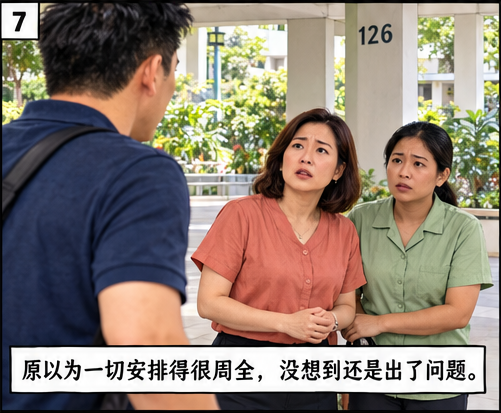
我在组屋楼下看见女佣和妻子，两人神色凝重。妻子说：“我打电话给小姑了，妈妈没去找她。她很担心，说要过来一起找妈妈。”
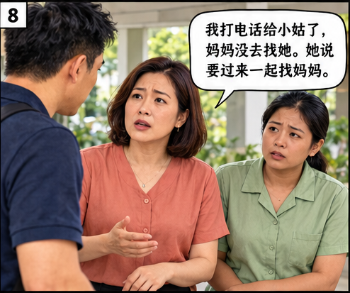
我们四处寻找，却始终不见母亲的踪影。不久，妹妹也来了，跟着一起找，她还在社交媒体上发了寻人启事。
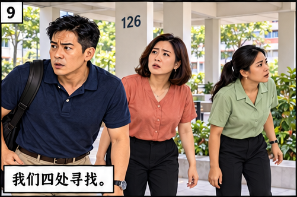
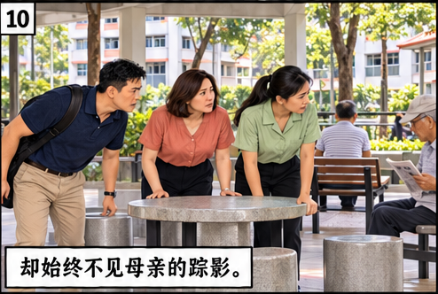
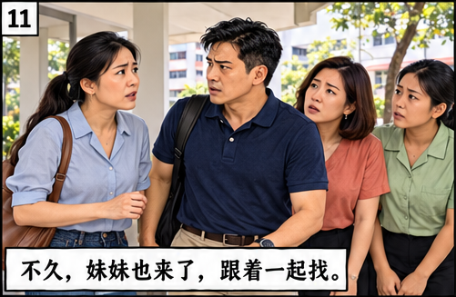
随着时间的流逝，我的心情也越来越沉重。正当我要报警时，手机响了。
电话是我小时候的邻居方阿姨打来的。“阿达，我在网上看到你在找妈妈。她回到我们这个组屋区了。”
我们连忙开车前往北部，那里是我小时候居住的地方。途中，妹妹突然说：“妈妈一定是去了那个游乐场。”
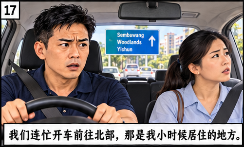
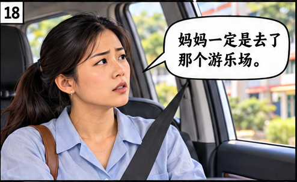
“哪个游乐场？”我不解地问。
“就是我们小时候常去玩的那个。那时妈妈带我们上巴刹，总会叮嘱我们，如果走散了，就到游乐场会合。”我的脑海里顿时浮现出以前和妹妹在游乐场嬉戏的画面，那里是我们儿时的乐园。那时候，母亲常会坐在游乐场边的长椅上，一边看我们玩耍，一边和邻居话家常。
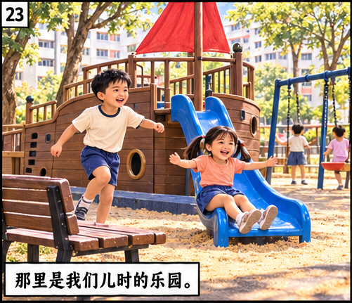
妹妹猜得没错，妈妈果然在那个游乐场，她正和几位老邻居聊天。
母亲看到我们，慈祥地笑着说：“阿达、阿妹，你们刚刚跑去哪里了？你们看，这是方阿姨给我买的咖喱卜。我知道你们爱吃，给你们留着呢！还好你们记得来游乐场会合。你们先去游乐场玩一玩吧，我跟邻居们聊聊天。”
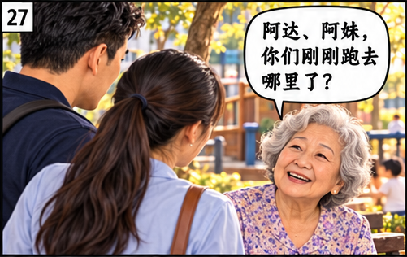
我和妹妹不约而同地望向游乐场。依然是那艘气派十足的大船，上面耸立着高高的桅杆。虽然大船显得有些老旧，但桅杆上仍然挂着俏皮的红色船帆。两个孩子围着波浪滑梯，你追我赶。旁边两个年纪小一点的孩子正开心地荡着秋千。随着他们的一起一落，秋千发出咿咿呀呀的声音。不远处有一条长椅，两位妈妈坐在那里聊天。她们不时转头看一看游乐场上的孩童，显得轻松而惬意。
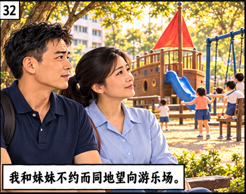
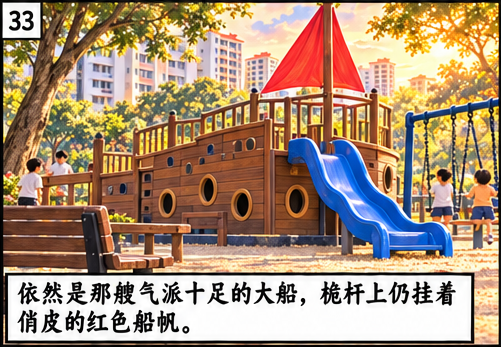
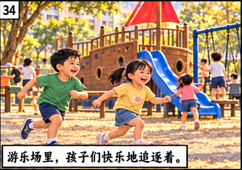
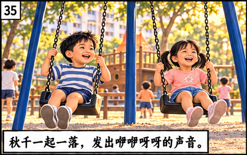
望着这个充满欢乐与温馨的游乐场，我再次想起了童年的美好时光。虽然游乐场的色彩已经不如往日鲜艳，但它仍然承载着我们的快乐，也寄托着母亲对那段岁月的怀念。
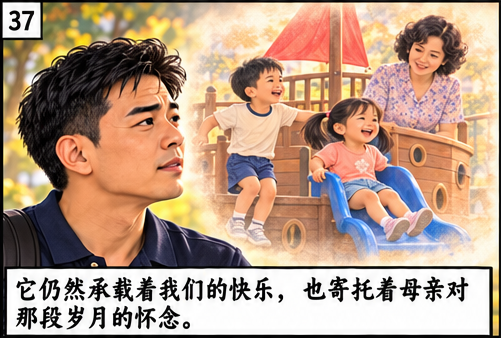
我看了看妹妹，她转过头去迎着晚风，似乎想让风吹干眼角的泪痕。我的心中也有所触动，之前因焦虑而产生的一丝烦躁早已消散无踪。我走到母亲身边，柔声地对她说道：“妈，我们回家吧。”
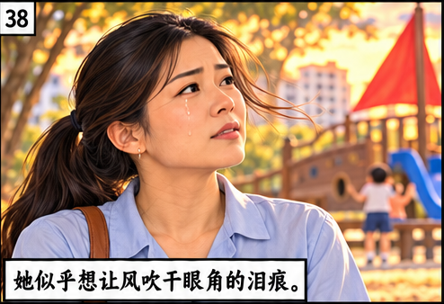

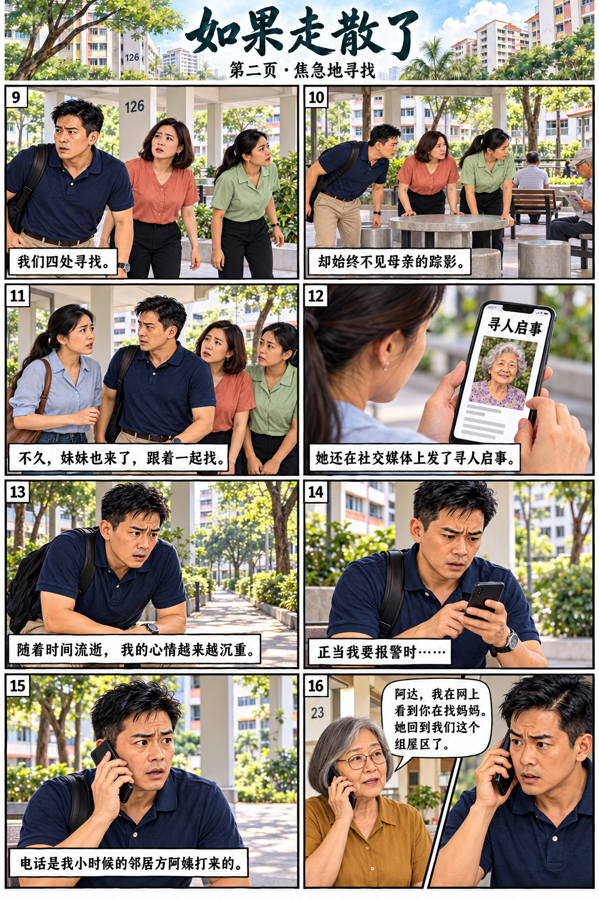
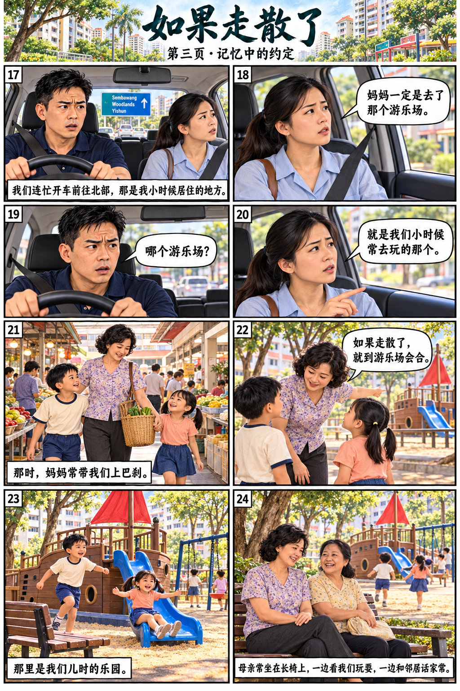
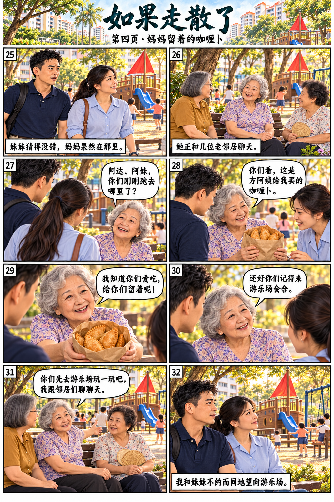
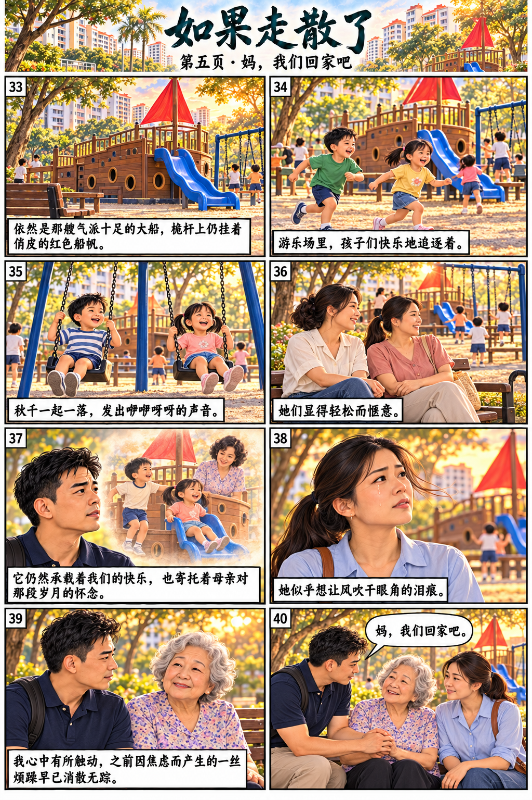